The Captains Report mobile edition — the same monthly
report, reformatted for easier reading on smaller screens.
OCTOBER 2026
THE DAMNED RETURN
Festival of the Damned brings tricks, treats and Soulflame
Skeletons to the seas
FESTIVAL OF THE DAMNED
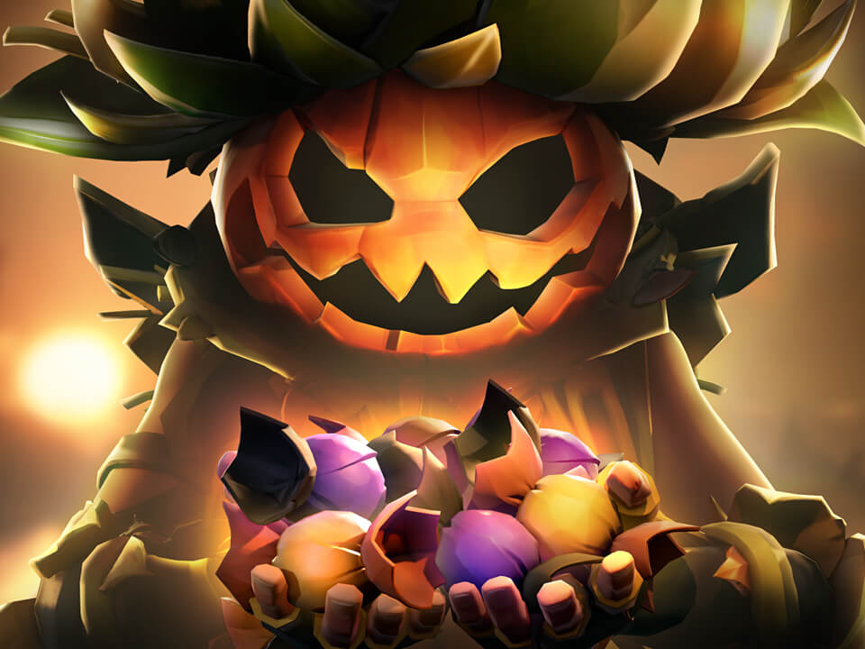
Festival of the Damned returns October 27, bringing a week of
tricks, treats and new rewards to the Sea of Thieves.
Pirates joining the event will receive a “Bucket of Confections
Emote” and a “Soulflame Mask”, two items that play directly into
this year’s festivities.
While the Bucket of Confections is only available for the duration
of the event, the Soulflame Mask will remain in players’
collections after the Festival ends.
Crews can use the new emote to offer Ghoulish Confections to
pirates they meet across the seas. Sharing enough treats will
reward generous pirates with the ghostly “Spiritfire Makeup.”
The “Soulflame Mask” also brings a new twist to the Fort of the
Damned. Wearing it while visiting an active Fort can summon
Soulflame Skeletons, with each one defeated awarding a Doubloon
to everyone on the island. Pirates who defeat enough can also
unlock the “Candlelight of the Damned” Lantern.
Festival of the Damned runs October 27 through November 3,
immediately following Season 21 Community Weekend and carrying
this year’s Halloween celebrations into the opening days of
November.
OCTOBER AT A GLANCE
OCTOBER 9th
Maiden Voyage (Bard’s Mix) releases
OCTOBER 16th–19th
Bilge Rats Weekender and Reaper Fortress Mega Stashes
OCTOBER 22nd
Outfit Saving and Golden Sands
OCTOBER 23rd–26th
Season 21 Community Weekend returns with up to 2.5× rewards
OCTOBER 27th–NOVEMBER 3rd
Festival of the Damned brings tricks, treats and Soulflame
Skeletons
OCTOBER 28th–NOVEMBER 3rd
Pirate Emporium Halloween Sale offers discounts of up to 30%
DRESS FOR THE OCCASION
Outfit Saving arrives October 22, bringing saved looks and a
redesigned wardrobe to Sea of Thieves
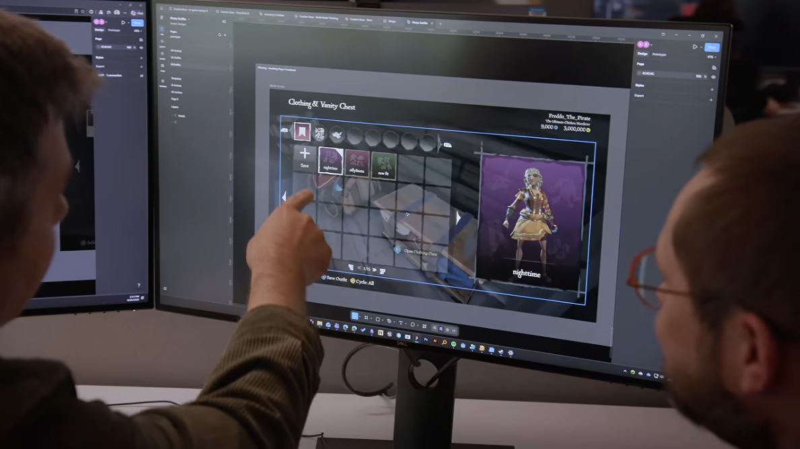
Pirates with overflowing wardrobes are finally getting a faster
way to switch between their favorite looks. Outfit Saving arrives
with the October Game Update on October 22, allowing players to
save complete ensembles and return to them without rebuilding an
outfit piece by piece.
Rare offered a closer look at the feature in September's Sea of
Thieves News, where Associate UX Director Andrew James explained
how the new wardrobe system will work. Players will be able to
dress their pirate, save the completed look to a dedicated slot
and quickly return to it whenever they want.
Saved outfits can be named, overwritten or deleted, and space
shouldn't be much of a concern. James says the system can support
hundreds of saved slots, leaving room for an outfit for just about
every occasion.
Outfit Saving is also bringing a larger change to the pirate
wardrobe. Rare is combining the Clothing and Vanity Chests into
a single system, allowing pirates to put together their entire
appearance without moving between separate locations. The team
acknowledges that this will leave plenty of categories inside one
chest, but believes the unified wardrobe will ultimately be easier
to use.
MUSIC OF THE MONTH
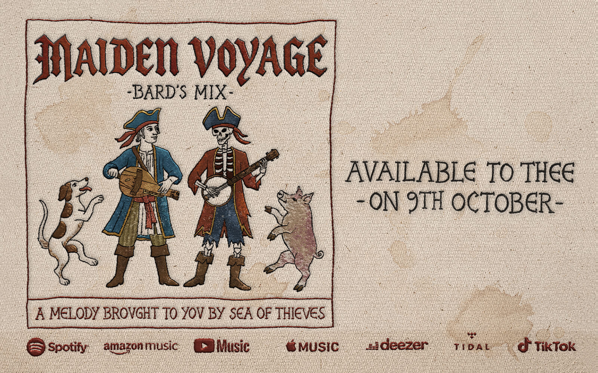
A familiar Sea of Thieves melody is getting a medieval makeover
this month with the release of “Maiden Voyage (Bard’s Mix).”
The new arrangement reimagines the classic Maiden Voyage theme
in the Bard’s Mix style, offering a different take on one of the
game’s most recognizable pieces of music. “Maiden Voyage
(Bard’s Mix)” releases October 9 across the usual music streaming
platforms, giving pirates another track from the Sea of Thieves
soundtrack to enjoy beyond the seas.
TWITCH DROPS
NEW REWARDS ARRIVE OCTOBER 23–26
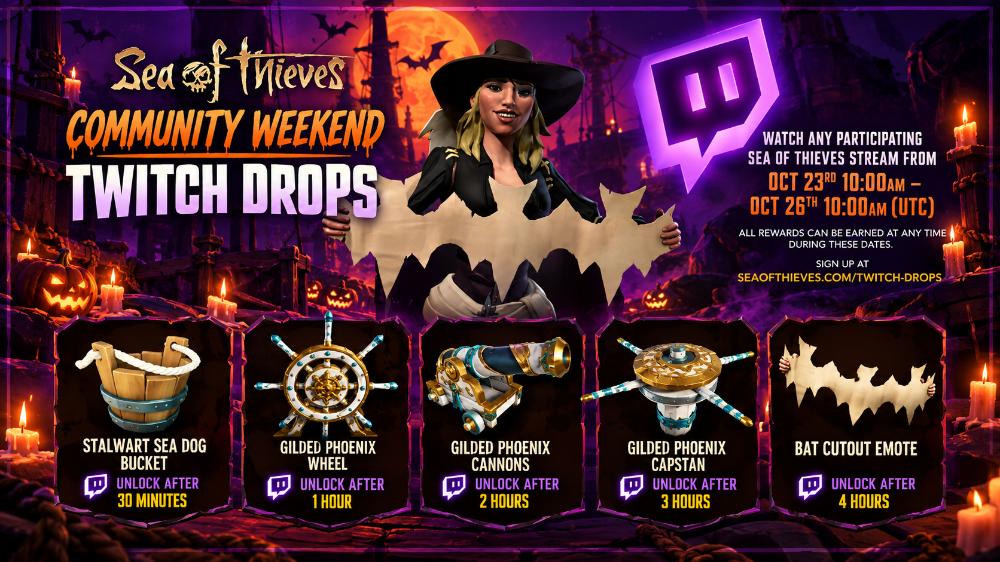
Community Weekend brings another round of Twitch Drops from
October 23–26, with five rewards available simply by tuning in
to participating Sea of Thieves streams.
Pirates can earn the “Stalwart Sea Dog Bucket”, along with the
“Gilded Phoenix Wheel, Cannons and Capstan”. The final reward is
the “Bat Cutout Emote”, an exclusive new emote arriving just in
time for Halloween.
Unlike some previous campaigns, viewers won’t need to stick to
Partners — any participating Sea of Thieves streamer can help
viewers progress toward the Drops during the event.
GOLDEN SANDS IN OCTOBER
Last month’s Legendary Location winner is ready to make its
return to Custom Seas
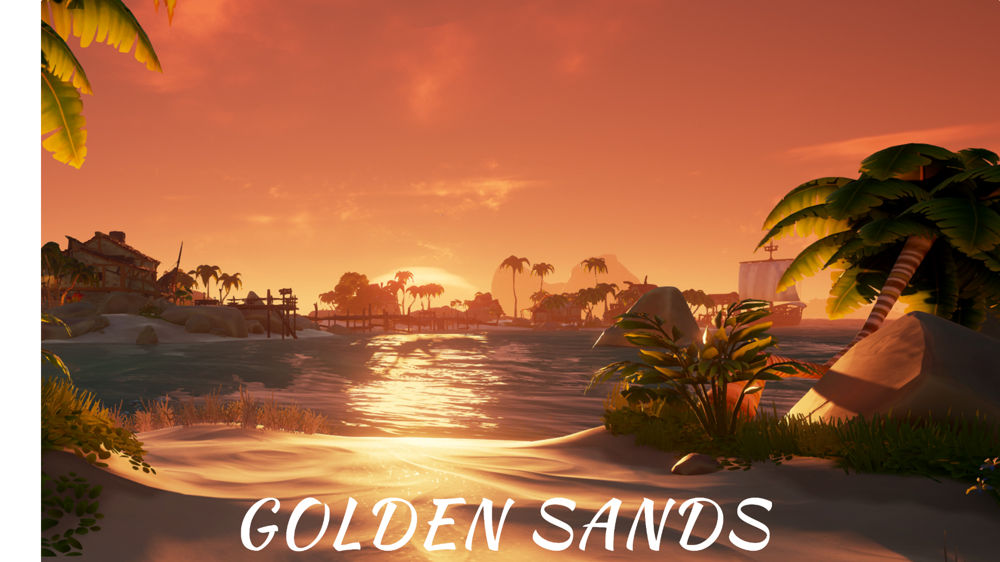
Last month, Golden Sands Outpost won the community’s Legendary
Location vote by a landslide, earning its place as the next classic
location to be restored for Custom Seas. At the time, Rare couldn’t
say exactly when pirates would be able to return. Now, the wait is
over.
The original Golden Sands Outpost will return on October 22 as part
of this month’s game update, giving players the chance to visit the
island as it existed before the events that eventually transformed
it into Port Merrick.
Unlike the modern version found across today’s Adventure servers,
this Legendary Location recreates the original Golden Sands,
bringing back the familiar Outpost that served pirates for years
before Flameheart’s forces left it shrouded and abandoned.
Its return also marks the first payoff from September’s community
vote. Rare previously explained that restoring a Legendary Location
involves more than simply pulling an old version from the archives.
Each location must be rebuilt, prepared for Custom Seas and tested
before crews can return.
Golden Sands is only the beginning. Old Boot Fort and Lost Sands,
which finished second and third in the vote, are still planned to
follow, with Rare restoring the locations in the order chosen by the
community. After years of change and a month of waiting for the
winning location to be ready, the original Golden Sands is finally
about to welcome pirates back.
🎶 SHANTIES FOR SALE 🎶
Rare reveals paid Pirate Emporium music and plans for fairer
bundle pricing
Last month, Rare outlined a new direction for the Pirate Emporium,
with a greater focus on collaborations, seasonal releases and
cosmetics inspired by the studio’s back catalogue. Now, the team has
revealed another part of that strategy — shanties purchasable with
Ancient Coins.
Speaking in October’s Developer Update, Production Director Drew
Stevens revealed that Rare is working on festive shanties for the
Emporium, with the first planned to arrive later this year. “Jingle
Bells” was shown as an example, bringing a familiar real-world tune
to the instruments of the Sea of Thieves.
Pirates won’t need an entire crew to purchase the music either. Only
one pirate needs to own an Emporium shanty for the rest of the crew
to join in and play along. Rare says paid shanties won’t follow a
strict schedule and also intends to avoid selling melodies with
important ties to Sea of Thieves’ lore, keeping story-important
music separate from paid offerings.
The Emporium is also getting another change aimed at players’
wallets. Rare has begun work on fairer bundle pricing for pirates
who already own some of the items included in a bundle. Under the
planned system, the price would be recalculated to account for those
owned items rather than charging the normal bundle price regardless
of what is already in a player’s collection.
The change is still in its early stages and will head to Insiders
for testing before reaching the live game. Rare says the issue has
become increasingly important as older Emporium cosmetics appear
elsewhere, including in Season Passes, leaving some players with
only part of a bundle left to collect.
Together, the two announcements offer the latest look at an Emporium
strategy that Rare only began outlining last month: new kinds of
premium content on one side, and a fairer way to purchase it on the
other.
HONEY, I SHRUNK THE GAME
Rare plans major cuts to Sea of Thieves’ install size
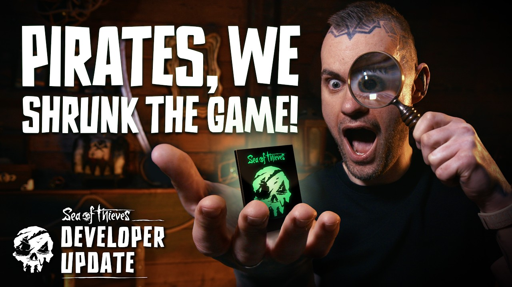
After eight years of updates, Sea of Thieves has gotten big —
literally. Rare is now working on a major overhaul aimed at
dramatically reducing the amount of storage the game takes up across
PC and consoles.
Production Director Drew Stevens detailed the work in October’s
Developer Update, revealing that Rare is targeting at least a 50%
reduction for 4K installations on PC and Xbox Series X. Non-4K
installations are expected to shrink by around 30%, with a similar
30% reduction targeted for PlayStation 5.
There is one catch. Moving to the new package format will require
players to redownload the entire game once when the change eventually
goes live. Rare says the inconvenience should pay off afterward,
with not only a much smaller overall installation but smaller monthly
game updates moving forward.
The work isn’t ready for the live seas just yet. Rare plans to roll
the new packaging out to Insiders first, where the team can test the
changes before bringing them to everyone else. No release date has
been announced.
For a game that has spent eight years getting bigger, Sea of Thieves
may finally be getting a little lighter!
STILL TALKING LIKE A PIRATE?
September’s celebration is over, but some rewards are still available
Talk Like a Pirate Day may have sailed by on September 19, but one
piece of the celebration is sticking around throughout October.
Eligible Game Pass subscribers can still claim the Vociferous
Speaking Trumpet through October 31, giving pirates a little more
time to pick up the commemorative cosmetic.
The Parley Pennant introduced alongside Season 21 isn’t disappearing
either. While the special challenge that asked three crews to raise
the flag together has ended, the Pennant itself remains a permanent
addition to the Flag Box, allowing crews to continue flying the new
symbol of peaceful intentions.
Pirates using Microsoft Rewards can also find the Loquacious
Figurehead included with updated Ancient Coin reward bundles, another
leftover from September’s Talk Like a Pirate Day celebrations.
TAVERN RUMORS
HALLOWEEN TREATS - CONFIRMED
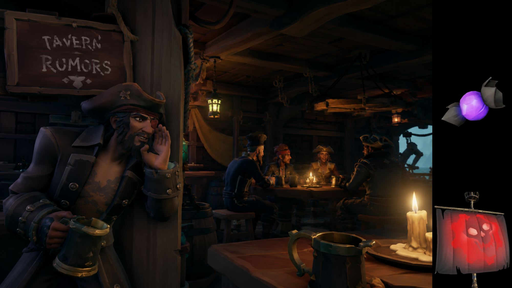
Last month, The Captain’s Report spotted signs that something sweet
was brewing for this year’s Halloween celebrations. Images of a
mysterious confection had surfaced ahead of the event, leading us
to predict that pirates might soon be collecting — or sharing —
candy on the seas.
That rumor can officially be put to rest. Festival of the Damned
will introduce Ghoulish Confections, handed out using the new
“Bucket of Confections” Emote. Pirates are encouraged to offer the
treats to other crews, with those generous enough to share earning
the Spiritfire Makeup.
GEARS OF WAR AGAIN?
With Gears of War: E-Day arriving this October, another familiar
symbol may be preparing to surface on the Sea of Thieves. Images
circulating among pirates appear to show a new red sail bearing the
unmistakable Crimson Omen, raising questions about whether another
Gears collaboration could be on the horizon.
STATUS: UNCONFIRMED
REPORT VERDICT: LIKELY
WEEKDAY WARRIORS
Pirates still have two reasons to set sail during the week, with
recurring Live Events taking over Tuesdays and Wednesdays.
FIGHT NIGHTS — EVERY TUESDAY
Pledge to the Guardians of Fortune or Servants of the Flame and
take to the Hourglass for 24 hours of increased Allegiance and
gold from Faction Battles.
EMISSARIES OF FORTUNE — EVERY WEDNESDAY
Raise an Emissary Flag and climb the Grades to earn boosted
rewards, regardless of which Trading Company you represent.
Both events begin at 10am UTC and run for 24 hours, giving pirates
back-to-back days to chase extra rewards.
COMMUNITY WEEKEND AT A GLANCE:
• UP TO 2.5× REWARDS
• POP-UP PLUNDER RETURNS
• PICTURE WALLS RETURN
• VOYAGE OF WILD LUCK
• POCKET PUMPKIN EMOTE
ALL HANDS ON DECK
Season 21 Community Weekend brings boosted rewards, Pop-Up Plunder
and Halloween tricks to the seas!
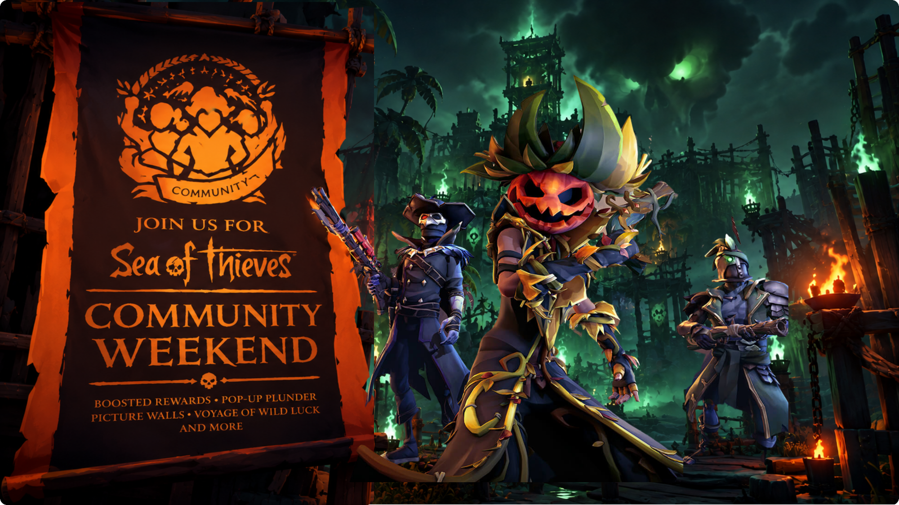
Throughout the weekend, pirates can help raise the Community
Emissary Grade by watching participating Sea of Thieves streamers
on Twitch. As the community climbs through the Grades, rewards
increase for everyone, reaching 2.5× the usual rewards at Grade 5.
Pop-Up Plunder and Picture Walls will also make their return,
sending crews in search of hidden treasure and giving pirates
another chance to pose together across the seas. A new Picture Wall
at Golden Sands joins the lineup this time, arriving just as the
classic Outpost makes its return to Custom Seas.
Simply setting sail during the event will also earn pirates the
Season 21 Community Weekend Flag and a Voyage of Wild Luck.
There’s a Halloween twist too. Special Community Goals will
challenge crews to take maps from the Quest Board and complete them
together. If enough maps are completed across the community,
pirates can earn the seasonal Pocket Pumpkin Emote.
With bigger rewards, buried treasure and community-wide challenges
waiting on the horizon, there will be plenty of reasons for all
hands to be on deck this Community Weekend.
RATS ARE BACK IN BUSINESS
Bilge Rats Weekender brings Smuggler Voyages, Reaper Fortress Mega
Stashes and a higher chance at the Chest of Fortune
The Bilge Rats are back at it from October 16th–19th, bringing a
weekend of limited-time activities, treasure and trouble to the Sea
of Thieves. Crews can take on special Smuggler Voyages, put on
Firework Displays and complete event Challenges to earn extra
Doubloons along the way.
The biggest prize, however, may be waiting inside a Reaper Fortress.
Mega Stashes return for the Weekender, giving pirates a chance to
find a treasure-packed Vault after completing the World Event.
Particularly lucky crews may even discover a Chest of Fortune among
the spoils.
Even if fortune isn’t on your side, taking down a Reaper Fortress
won’t leave you empty-handed. Completing one during the Weekender
will award Doubloons regardless of which stash is waiting inside,
giving every crew a reason to take on the Fortress.
With Smuggler Voyages to complete, fireworks to light and Mega
Stashes waiting to be cracked open, the Bilge Rats are officially
back in business.
BIG SHIPS, BIG PROBLEMS
Last Ship Standing shelves Galleons as Rare prepares six-Brigantine
testing
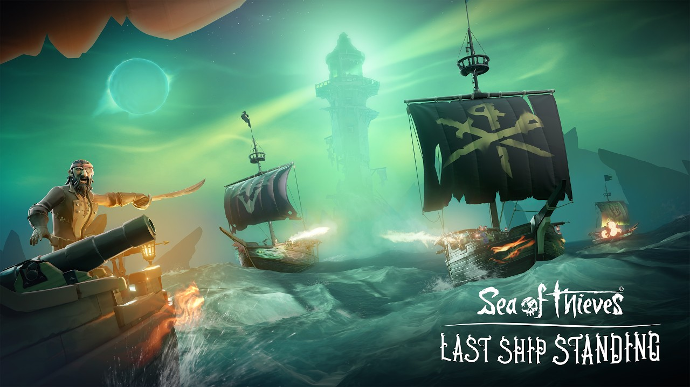
Rare’s plans to bring Galleons into Last Ship Standing have hit
rough waters. After testing battles featuring six Galleons and 24
pirates through the Insider Programme, the team found that server
performance wasn’t stable enough to deliver the experience they
wanted.
Reducing the battle to four Galleons and 16 pirates was considered,
but that created another problem. With fewer ships on the
battlefield, Rare felt the mode would lose too much of the chaotic
multi-ship combat that Last Ship Standing was designed around.
Rather than compromise the experience, Galleon testing has been put
on hold. Rare is instead preparing to test matches featuring six
Brigantines, keeping six crews in the fight while reducing the
strain caused by the much larger Galleons.
The change doesn’t necessarily mean Galleons are gone for good, but
for now Last Ship Standing’s biggest ships will have to remain on
the sidelines while Brigantines prepare to enter the battle.
DID SIZE REALLY MATTER?
Rare shares the results of their Big Ship, Little Ship matchmaking
experiment
After experimenting with separating ships by size earlier this year,
Rare has shared what it learned from Big Ship, Little Ship — and the
results weren’t quite as simple as bigger ships versus smaller ones.
During the experiment, Sloop crews took part in more high-risk
activities, suggesting that smaller crews may have felt more
confident taking chances when they knew other Sloops would make up
more of the seas around them. At the same time, however,
Sloop-versus-Sloop encounters actually decreased.
Rare also found that both versions of the experimental servers
remained populated for longer, although the team couldn’t identify
a single reason for the change. Community sentiment improved as the
experiment continued too, despite reactions remaining mixed overall.
So, did size really matter? Apparently — but not enough to declare
the experiment a complete success. Rare described the results as
“not a home run” and isn’t rushing to bring Big Ship, Little Ship
back in its current form.
The experiment may be over for now, but some of what Rare learned
could still influence how crews are matched across the seas in the
future.
TRICKS, TREATS & 30% OFF
The Pirate Emporium celebrates Halloween with discounts of up to 30%
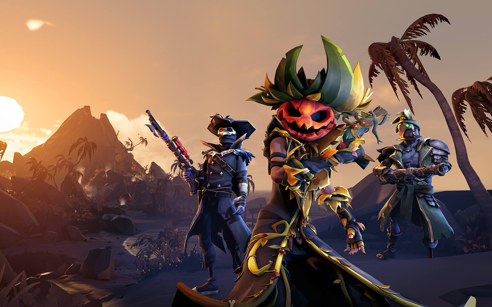
Halloween is creeping into the Pirate Emporium with a seasonal sale
running from October 28th through November 3rd, giving pirates a
chance to pick up some appropriately frightening cosmetics at a
discount.
Throughout the sale, selected items will be discounted by up to 30%,
with three spooky collections taking center stage: Jack O’ Looter,
Crimson Crypt and Graveyard Gladiator.
The Jack O’ Looter Collection brings its pumpkin-headed style back
to the Emporium, while the Crimson Crypt Collection offers a darker,
vampiric look for pirates wanting to embrace the night. The
Graveyard Gladiator Collection rounds out the featured lineup with
its battle-worn, undead-inspired appearance.
With Festival of the Damned beginning just one day earlier, the sale
arrives at the perfect time for crews looking to dress for the
occasion — whether that means pumpkins, vampires or something that
looks like it just crawled out of a grave.
The sale disappears alongside the Festival on November 3rd, so
pirates looking to give their wardrobe a Halloween makeover will
only have a limited time to take advantage of the discounts.
SMOOTHING OUT THE SEAS
Rare continues its game health work with new PC protections and more
control over how pirates aim
Rare’s ongoing push to improve the health of Sea of Thieves
continues this month, with the team turning its attention toward PC
security, mouse controls and aiming options.
September introduced new protections designed to prevent players
from modifying certain game files on PC, part of Rare’s continuing
efforts to maintain a fair playing field. October builds on that
work with a new option allowing PC players to disable mouse
smoothing, giving those who prefer more direct mouse movement
greater control over their aim.
Rare is also looking beyond this month’s update. The team says it
wants to explore more officially supported options for aiming
sensitivities and controls, giving players greater flexibility
without forcing them to rely on unsupported changes.
There is a limit to that flexibility, however. Rare drew a
distinction between settings that improve how players control and
experience the game and changes that could provide a tactical
advantage, such as removing visual effects intended to affect
players during combat.
The goal is to give pirates more control over how the game feels to
play while keeping the seas fair for everyone sharing them.
COMMUNITY SPOTLIGHT
QUESTS BEYOND THE GAME
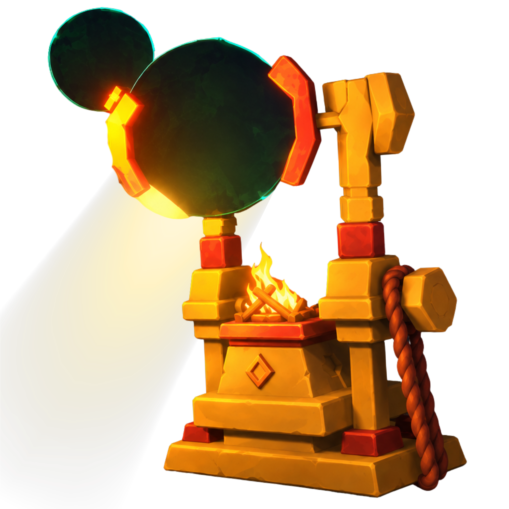
This month’s Community Spotlight goes to AshTheRaider, creator of
SoT Quest Board. While looking around at some of the projects being
made by the Sea of Thieves community, I came across the Quest Board
and thought it was a really interesting project worth sharing with
other pirates.
SoT Quest Board is an unofficial fan-made project designed to give
pirates new challenges to tackle on the seas. Rather than deciding
what to do next, crews can use the Quest Board to generate
challenges and turn an ordinary session into something a little more
unpredictable.
Built using Godot and Krita, the project is still being developed
and has already expanded with new features and improvements. Ash has
also opened the project to ideas from fellow pirates, allowing
community members to submit their own challenges for consideration
— making SoT Quest Board a project shaped not only for the
community, but with it.
VISIT:
AshTheRaider on itch.io — SoT Quest Board
(https://ashtheraider.itch.io/sot-quest-board)
SAIL DESIGN COMPETITION
Sea of Thieves invites community artists to design a sail for the seas
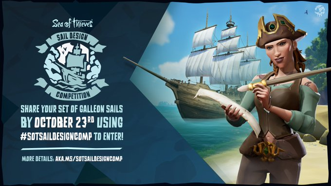
Pirates with an eye for design have a chance to leave their own mark
on the Sea of Thieves this month, with the Sail Design Competition
inviting members of the community to create a sail design of their
own.
The competition continues through Friday, October 23rd, giving
artists time to put together a design and submit their entry for
consideration. It’s another opportunity for the creativity of the
Sea of Thieves community to take center stage, this time with one of
the most recognizable parts of any ship as the canvas.
Over the years, sails have become an easy way for crews to show some
personality on the horizon, whether through elaborate artwork,
familiar symbols or a design that simply looks intimidating from a
distance. This competition puts that creativity directly into the
hands of the community and gives artists the chance to imagine what
they would want pirates to see approaching across the waves.
With entries open for only part of October, anyone planning to take
part will need to have their design ready before the October 23rd
deadline.
HOW TO ENTER
Create your own original sail design using Rare’s official
template, or draw your own version showing all seven sails of a
Galleon. Then post your design on X, Bluesky, Instagram, TikTok or
Threads using #SoTSailDesignComp, or submit it to the
#sot-sail-design-comp channel in the official Sea of Thieves
Discord. Entries close October 23rd at 23:59 UTC.
*Generative AI cannot be used to create or modify an entry*
REAPERS WATCH
CHANGING TIDES AT RARE
October’s Developer Update opened on a more serious note than usual.
Before getting into the latest Sea of Thieves news, Production
Director Drew Stevens briefly addressed what he described as a
difficult period of change at Rare.
Those comments arrive during a much larger shake-up across Xbox.
Recent restructuring has included another round of job cuts across
Microsoft’s gaming division, while Rare itself has been moved under
the oversight of Activision alongside World’s Edge. Activision’s
role within Xbox has also expanded further, including responsibility
for a new team developing the next Halo title.
For Rare, that naturally raises questions. The studio has spent years
operating as one of Xbox’s most recognizable first-party developers,
and a move under Activision represents a significant change in where
it sits within Microsoft’s gaming organization.
What it means for Sea of Thieves, however, is much less clear.
There’s already plenty of speculation about whether Activision’s
involvement could eventually affect Rare’s games, development
structure or long-term direction. But at least for now, there has
been no announcement that Activision is taking over development of
Sea of Thieves, and Drew did not use the Developer Update to suggest
that the game’s plans were changing.
That’s an important distinction. The restructuring itself is real;
predictions about what it ultimately means for Sea of Thieves are
still just that — predictions.
For now, Rare continues moving ahead with Season 21 and its upcoming
updates. But after layoffs, restructuring and a new place for the
studio beneath Activision, there is understandably more attention
than usual on what comes next.
The seas may look familiar, but behind them, Rare is entering a very
different chapter.
CAPTAINS LOG
October ended up being an even busier month for Sea of Thieves than
I expected.
Between the return of Festival of the Damned, Community Weekend, the
Bilge Rats Weekender, Golden Sands returning to Custom Seas and
Outfit Saving finally arriving, there was a lot to cover this month
— and that was before getting into everything Rare discussed about
the future of the game.
This issue also gave me another chance to highlight more of the
community. I really enjoyed finding SoT Quest Board and being able to
share something I thought was interesting with other pirates, rather
than only focusing on official game news.
I’m especially interested to see how some of this month’s changes
actually play out. Outfit Saving is something pirates have wanted
for a long time, while the return of Golden Sands gives us another
piece of the game’s past to revisit. I’m also curious to see where
Rare takes Last Ship Standing after moving away from Galleons and
toward testing Brigantines.
Behind all of that, there are clearly changes happening at Rare as
well. I covered those separately in Reapers Watch, and for now I
think it’s better to see where things go rather than speculate about
what hasn’t been announced.
For now, though, October has plenty to keep us busy. There are
Fortresses to raid, pumpkins to collect, festivals to celebrate and
probably more than a few surprises still waiting beyond the horizon.
The Captains Report mobile edition — the same monthly
report, reformatted for easier reading on smaller screens.
SEPTEMBER 2026
SEASON 21 SETS SAIL
Season 21 arrives September 17 with new rewards,
recurring events and another major sandbox experiment
A NEW SEASON BEGINS
Season 21 arrives September 17, and this one is going to
look a little different.
Rather than launching alongside one massive new feature,
Rare is putting more attention on the world that is
already there.
Recurring Live Events will play a bigger role throughout
the Season, Custom Seas will continue to expand, and a
major experiment will try to get crews spending more time
sailing across the shared world.
The Season Pass isn't going anywhere. A new free reward
track arrives with another Star Prize waiting at level 50,
while the Premium Tier brings the new “Mutiny's Mark”
collection.
Outpost shops are also getting some much-needed attention,
with new cosmetics arriving for players to earn and
purchase with gold. The Pirate Emporium will still receive
new stock, including the returning “Bleakheart Groom”, but
Rare says a larger change to its cosmetic strategy is on
the way.
The biggest change, however, may be what Season 21 takes
away. Diving to Voyages, Tall Tales and Raids will be
disabled as Rare tests whether keeping crews on the same
server for longer can bring more life back to the sandbox.
SEASON 21 AT A GLANCE
SEPTEMBER 17th
Season 21 begins
NO DIVING
Voyages, Tall Tales and Raids will REQUIRE sailing
NO HEADLINE FEATURE
Major features are no longer tied to Season launches
PORTAL HOPPING
Changing servers will reset your Emissary Grade
NEW REWARDS
A new Season Pass and Premium Tier arrive
MORE LIVE EVENTS
Recurring events take a bigger role throughout
the Season
NO MORE EASY ESCAPE
Rare expands its Season 21 experiments to include
Portal Hopping
In the latest Sea of Thieves Developer Update, Production
Director Drew Stevens discusses a major change to portal
hopping coming with Season 21. Crews will still be able to
use the Sea of the Damned to move between servers, but they
will no longer be able to carry their Emissary Grade with
them.
The change will be especially noticeable for Grade Five
Reapers, who could previously portal hop while keeping
their Grade and immediately begin hunting Emissaries on
the new server.
Stevens explained that this works with Rare's goal of
making each server feel like its own “living story.” The
team wants crews to see threats developing around them and
have time to react, rather than having a fully established
Reaper suddenly arrive from another server.
Rare acknowledges that the change won't appeal to
everyone, but believes crews should build their reputation
and influence on the seas they're currently sailing.
MUSIC OF THE MONTH
Arriving alongside Season 21 is a brand-new track from the
Sea of Thieves Audio Team. “Weatherbound” can already be
heard accompanying the Season 21 title screen, bringing a
new sound to the start of the latest Season.
The track officially releases on September 11 across music
streaming platforms, giving pirates a chance to take the
sounds of Season 21 with them beyond the seas.
TWITCH DROPS
NEW REWARDS ARRIVE SEPTEMBER 18–23
Twitch Drops return this month with another set of rewards
for pirates tuning in to participating Sea of Thieves
streamers.
From September 18 through September 23, players can earn
Gold and Renown, along with the Drum Show-Off Emote,
Lazybeard Title, Twilight Hunter Fishing Rod and Graveyard
Gladiator Pistol.
Those who stick around for the full six hours can also
claim the new and exclusive Fishbone Throwing Knives.
Make sure your Sea of Thieves and Twitch accounts are
linked before watching to earn the rewards.
GOLDEN SANDS RETURNS
Fan-favorite Outpost wins the community vote and is
heading to Custom Seas
The votes are in, and Golden Sands has won by a landslide.
Production Director Drew Stevens revealed the results of
the Legendary Location community vote during September's
Sea of Thieves Developer Update, confirming that the
original Golden Sands Outpost will be the next classic
location rebuilt for Custom Seas.
The original Golden Sands Outpost, as it existed before
its transformation into Port Merrick, will now be restored
as the next Legendary Location for Custom Seas. Rare will
be digging back through its archives to rebuild the
classic Outpost and prepare it for use within Custom Seas.
Stevens was quick to note, however, that these old
locations aren't simply “sitting on a shelf ready to go.”
Bringing Golden Sands back will require the team to restore
the location, set it up for Custom Seas, polish it and put
it through testing before players can return.
Old Boot Fort, which finished second in the vote, and Lost
Sands, which came in third, aren't being forgotten either.
Rare plans to bring both to Custom Seas after Golden Sands,
working through the locations in the order decided by the
community.
For now, there's no release date for Golden Sands. Rare
says each location will arrive when it's ready.
BUGS GO PUBLIC
Rare trials a new way for players to report and
prioritize problems
Reporting a troublesome bug is about to become a much more
public affair. Rare has opened a new Bug Reporting section
on the official Sea of Thieves Forums, giving players a
place to raise issues publicly while allowing the community
to add information and upvote the problems affecting them
most.
The announcement follows a recent bug bash by the Game
Health team, which Stevens said has already tackled a
number of commonly reported problems. These include the
elusive “Mast bug”, inconsistent barrel inventories,
Ancient Megalodons failing to release rewards, stingy
Merchants, and several issues that can appear after
migrating between servers.
Rare is treating the new reporting system as a trial,
rather than a permanent replacement from day one. The team
will watch how the system is used and see whether giving
the community a more public role helps identify the
problems that need attention most.
A NEW LOOK AT COSMETICS
Rare responds to player feedback with changes to how
cosmetics are released
Rare has heard the complaints surrounding the Pirate
Emporium, and changes are on the way. During September's
Developer Update, Production Director Drew Stevens
addressed the growing imbalance between cosmetics sold
through the Emporium and those players can earn or
purchase while actually playing the game.
Stevens explained that the Pirate Emporium remains an
important part of funding the continued development of
Sea of Thieves, now in its ninth year, and isn't going
anywhere. However, Rare is changing how cosmetics will be
divided between the Emporium and the rest of the game.
Beginning in October, the Emporium will lean more heavily
into brand collaborations, real-world seasonal items and
cosmetics inspired by Rare's catalogue of games. Rare is
also moving away from releasing a complete cosmetic set
every month, instead focusing on smaller bundles of
high-quality items.
Meanwhile, Outpost shops will continue receiving new stock
every month, with Rare promising a much stronger selection.
Each Season will also introduce a mini-set celebrating a
legendary character from Sea of Thieves lore, while Pirate
Legends will gain access to an exclusive set they can earn
each Season.
Season 21 kicks off the new approach with Merrick's
Fisherman's Fable set, the Pirate Legend-exclusive
Courteous Knave set, and the new Cast Iron set, beginning
with its weapons in September.
PAH-PAH-PARLEY?
A new flag gives friendly crews a way to signal their
intentions
Sea of Thieves is celebrating Talk Like a Pirate Day from
September 17–22, and this year's celebration is bringing
something permanent to the seas.
The new Parley Pennant will be added to every crew's Flag
Box, giving pirates a way to signal that they would rather
talk than immediately open fire. Of course, raising the
pennant doesn't guarantee the other crew will play along —
this is still Sea of Thieves, after all.
There's also a reward for pirates willing to put the new
signal to the test. During the event, crews who approach
three other ships while flying the Parley Pennant will
unlock the Parley Proficiency Sails.
Unlike the event challenge, the pennant itself isn't going
anywhere when the celebration ends. It will remain
permanently available after Talk Like a Pirate Day, giving
crews another way to communicate their intentions before
deciding whether it's time to talk — or fight.
TAVERN RUMORS
HALLOWEEN TREATS?
Rumors of this year's Halloween celebrations are already
beginning to spread. Sources shared images reportedly
showing a new Banshee costume and a mysterious piece of
candy that pirates may be collecting during the event.
STATUS: UNCONFIRMED
REPORT VERDICT: LIKELY
25 YEARS OF XBOX
A celebration of Xbox history may soon be sailing into
Sea of Thieves. A leak of what appears to be a new set of
Xbox 25th Anniversary Sails, though when — and how —
pirates will be able to get their hands on them remains
unknown.
STATUS: UNCONFIRMED
REPORT VERDICT: LIKELY
MIDWEEK MAYHEM
Pirates still have two reasons to set sail during the
week, with recurring Live Events taking over Tuesdays
and Wednesdays.
FIGHT NIGHTS — EVERY TUESDAY
Pledge to the Guardians of Fortune or Servants of the
Flame and take to the Hourglass for 24 hours of increased
Allegiance and gold from Faction Battles.
EMISSARIES OF FORTUNE — EVERY WEDNESDAY
Raise an Emissary Flag and climb the Grades to earn
boosted rewards, regardless of which Trading Company
you represent.
Both events begin at 10am UTC and run for 24 hours, giving
pirates back-to-back days to chase extra rewards.
PLUNDERING THE PASS
Season 21 brings a new reward track, a new Star Prize
and the Mutiny's Mark collection
Season 21 brings another 50 levels of rewards for pirates
to work through, with both the free Season Pass and an
optional Premium Tier offering new cosmetics throughout
the Season.
The free track once again includes rewards from the Pirate
Emporium alongside gold, Doubloons, Ancient Coins and new
cosmetics earned simply by raising Renown. Reaching level
50 will also unlock Season 21's new Star Prize, continuing
the system introduced in Season 20.
For pirates looking for more, the Season 21 Premium Tier
introduces the Mutiny's Mark collection, with pieces
unlocked as players progress through the Pass.
PASS AT A GLANCE
50 Renown Levels
425 Doubloons
9 Cosmetic Choices
1 New Star Prize
10 Voyages to Choose From
THE BILGE RATS ARE BACK
Old Voyages return for a weekend of Doubloons,
Ashen treasure and extra rewards
The Bilge Rats are calling pirates back into action with
a special Weekender running from September 11–14, bringing
a pair of familiar Voyages back to the seas for a limited
time.
During the event, crews can once again take on the
Smugglers' Doubloon Run and Recovery of a Secret Shipment
as Special Voyages. Pirates willing to brave the Devil's
Roar will also find Ashen Message in a Bottle Voyages,
offering another reason to sail through the region's
fiery waters.
Completing three Ashen Message in a Bottle Voyages during
the Weekender will reward crews with 300 Doubloons, while
Ashen treasure handed in throughout the event will earn
increased Gold and Reputation.
Whether you're returning for an old Voyage or simply
looking to fill your pockets, the Bilge Rats are making
this a profitable weekend to set sail.
FORTUNE FAVORS THE BOLD
Gold & Glory returns September 25–28 with boosted
rewards across the seas
Pirates looking to end September with heavier pockets will
have their chance when Gold & Glory Weekend returns
from September 25–28.
Throughout the event, crews can earn increased Gold and
Reputation from their adventures, alongside boosted Guild
Reputation and Renown.
Hourglass fighters aren't being left out either, with
increased Allegiance available for those willing to battle
for their Faction.
Whether you're working through the Season 21 Pass,
climbing the Emissary ranks or fighting your way through
the Hourglass, it'll be one of the most rewarding weekends
of the month to set sail.
MORE PIRATE PLUNDER
Extra rewards, a sale and a golden Xbox join the
Talk Like a Pirate Day celebrations
The Talk Like a Pirate Day celebrations stretch beyond
the new Parley Pennant, with several extra rewards and
promotions appearing throughout September.
From September 18–21, the Pirate Emporium will hold a
special sale with up to 30% off Captaincy items, avian
pets and emotes. Xbox Game Pass subscribers can also
claim the Vociferous Speaking Trumpet, while selected
Microsoft Rewards Ancient Coin bundles come with the
Loquacious Figurehead as a bonus.
Pirates in eligible regions can even enter a special
Microsoft Rewards sweepstakes for a Golden Legends
Xbox Series X and controller, along with one year of
Xbox Game Pass Premium.
THE MONTH AHEAD
Mark your calendars — September is packed with reasons
to set sail
SEPT. 17
🌊 Season 21 Sets Sail
🏳️ Talk Like a Pirate Day Celebrations Begin
SEPT. 18
📺 Twitch Drops Begin
🛍 Talk Like a Pirate Day Emporium Sale Begins
SEPT. 19
🦜 Talk Like a Pirate Day
SEPT. 22
🏳️ Talk Like a Pirate Day Celebrations End
SEPT. 23
📺 Twitch Drops End
SEPT. 25
💰 Gold & Glory Weekend Begins
SEPT. 28
💰 Gold & Glory Weekend Ends
EVERY TUESDAY — FIGHT NIGHTS •
EVERY WEDNESDAY — EMISSARIES OF FORTUNE
COMMUNITY SPOTLIGHT
CRAFTING THE SEA OF THIEVES
After eight years on Etsy, ChloeSaurasCrafts begins a new
chapter with a shop of her own.
For years, ChloeSaurasCrafts has been a familiar name
within the Sea of Thieves community, bringing items from
the game into the real world through handmade props,
replicas and collectibles.
But after eight years on Etsy, that chapter has
unexpectedly come to an end.
Chloe recently announced that her Etsy store had been
taken down after a Ferryman Flintlock prop was listed on
the platform. According to Chloe, the closure came despite
eight years of selling through Etsy, hundreds of five-star
reviews and no previous cases against her shop.
It was a frustrating end to a storefront that had built
quite the history. Before its removal, Chloe's Etsy shop
had accumulated around 2,300 sales and more than 450
reviews, with creations ranging from miniature treasure
chests to full-size Sea of Thieves weapon props.
Rather than let that bring her crafting voyage to an end,
Chloe has decided to move on from Etsy altogether.
ChloeSaurasCrafts now has a shop of its own, where she
plans to continue expanding her collection and once again
offer life-size weapon props alongside her other
creations. Her gallery already showcases an impressive
history of Sea of Thieves work, including the Ferryman
set, Gilded Phoenix weapons, treasure chests, Eye of Reach
replicas and even the Box of Wondrous Secrets.
For a creator who has spent years turning treasures from
the Sea of Thieves into something pirates can actually
hold, losing the old storefront may mark the end of one
voyage — but certainly not the end of the journey.
SEASON 21: WHAT TO WATCH
The new Season is almost here — but its biggest changes
may take time to judge.
Season 21 sets sail on September 17, and while new rewards
and cosmetics will immediately grab attention, some of the
Season's most important changes won't be measured by what
appears in the Pirate Log.
Rare's experiment with removing diving to Voyages, Tall
Tales and Raids could fundamentally change how crews move
around the world. The idea is simple: if pirates spend
more time sailing instead of disappearing beneath the
waves, servers may begin to feel more alive. The real test
will be whether that creates more unexpected encounters —
or simply leaves crews spending more time travelling to
the adventures they wanted to play.
Portal Hopping will be another one to watch. Crews can
still travel through the Sea of the Damned to find another
server, but losing Emissary Grade in the process should
make hopping a much more expensive decision. For Reapers
in particular, it could mean threats develop naturally on
a server instead of arriving at Grade Five without
warning.
Then there's the world surrounding those experiments.
Recurring Live Events are taking a larger role, Outpost
stores are receiving more attention and Rare's new
approach to cosmetics begins taking shape. Individually,
none may transform the game overnight, but together they
point toward a Season focused less on adding another
enormous feature and more on changing how pirates use the
world already around them. By the end of Season 21, the
question may not be what Rare added — but whether the Sea
of Thieves itself feels more alive.
REAPERS WATCH
DIVIDED OVER DIVING
One of Season 21's biggest experiments is also becoming
one of its most debated. When the new Season begins, crews
will no longer be able to dive directly to Voyages, Tall
Tales or Raid Voyages, forcing pirates to sail across the
shared world to reach their destination.
Rare's goal is to keep ships on servers longer and
encourage the unpredictable encounters that have always
been at the heart of Sea of Thieves. For some players,
that's exactly what Adventure has been missing.
Diving made reaching an activity faster, but it also
allowed ships to disappear from a server almost instantly,
potentially cutting short the stories and encounters
developing around them.
Not everyone is convinced. Other pirates argue that
removing diving doesn't guarantee more meaningful
interactions — it may simply mean longer journeys between
activities. A crew interested in completing a particular
Voyage may now spend more of its session sailing there
rather than actually playing it, and some question whether
players who don't want an encounter will suddenly become
more willing to stick around for one.
Reapers are caught directly in the middle of another part
of the experiment. Portal Hopping will remain, but crews
changing servers through the Sea of the Damned will lose
their Emissary Grade. That means a Grade Five Reaper can
no longer arrive on another server with its full Grade
already established, something Rare hopes will allow
threats to develop naturally within each server.
Both changes are ultimately chasing the same idea: make
each server feel like a living world rather than a
collection of activities crews jump between.
Whether removing one of the game's biggest shortcuts
accomplishes that — or simply makes the journey longer —
is something pirates won't truly know until Season 21
sets sail.
CAPTAINS LOG
September is shaping up to be an interesting month for
Sea of Thieves.
Season 21 isn't built around one massive addition, but
instead a number of changes that could have a noticeable
effect on how the game is played.
The removal of diving is probably the one I'm most
interested to see in practice.
I understand what Rare is trying to accomplish by keeping
crews on servers longer, but whether that actually leads
to more player encounters or just more time spent sailing
is something we'll have to see for ourselves.
This was also a bigger issue of The Captains Report than
usual.
There was simply a lot worth covering this month, and I
wanted to give some of these stories more room rather than
trying to squeeze everything into the usual format.
I'm especially happy to start highlighting more of the
community alongside the regular game news.
With Season 21 beginning September 17 and October already
looking interesting, there should be plenty to talk about
in the next issue.